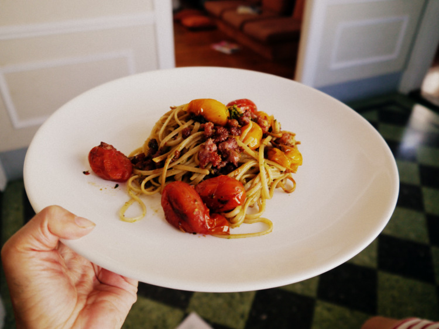

Pasta con Chorizo Crocante
Link original: http://www.paulinacocina.net/pasta-con-chorizo-crocante/5105

Ingredientes (Para 4 personas).
- 400g. de tallarines
- 1 chorizo fresco (en España: chorizo criollo)
- 1 diente de ajo
- 300g. de tomates cherry
- Sal (solo para el agua de la pasta)
Ingredientes para el pesto:
- 1 atado de albahaca
- 2 dientes de ajo
- 1 puñado de nueces
- 1 cda. panzona de queso parmesano rallado
- Aceite de oliva
- Sal y pimienta
Pasos:
- Quitar la piel al chorizo.
- En una sartén caliente y sin nada en el fondo, colocar el chorizo. Ir deshaciendo con una cuchara mientras se cocina hasta que quede desmenuzado. El chorizo se desgrasará y quedará crocante. Retirar y reservar.
- Retirar el exceso de grasa de la sartén pero no lavarla.
- Volver a calentar la sartén y agregar el diente de ajo laminado y los cherries (lavaditos, eh!). Cocinar a fuego fuerte. No revolver con cuchara, solo menear la sartén. Vale cancherear. La idea es que los tomates queden dorados y no se deshagan.
- El pesto: poner la albahaca y el ajo en el vaso de la minipimmer y procesar. Salpimentar. Agregar las nueces, el queso y el aceite de oliva y volver a procesar. No demasiado, la idea es que la nuez no quede completamente deshecha. Reservar. Esta es la forma rápida de hacer el pesto
- En algún momento de toda esta historia, cociná la pasta como indica el paquete, en abundante agua con sal.
- Escurrí la pasta y agregala a la sartén donde tenías los cherries. Agregá el pesto y el crocante de chorizo. Mezclá bien hasta que el pesto se distribuya en toda la pasta.
- Serví la pasta con chorizo, llové con un chorrito de aceite de oliva y, si te gusta, con parmesano rallado.